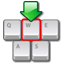

Introduction:
What is Two-Channel Auto-Type Obfuscation?
Introduction:
What is Two-Channel Auto-Type Obfuscation?|  | Two-Channel Auto-Type ObfuscationDescription of the Two-Channel Auto-Type Obfuscation feature in KeePass 2.x. |
Introduction:
What is Two-Channel Auto-Type Obfuscation?The Auto-Type feature of KeePass is very powerful: it sends simulated keypresses to other applications. This works with all Windows applications and for the target applications it's not possible to distinguish between real keypresses and the ones simulated by Auto-Type. This at the same time is the main disadvantage of Auto-Type, because keyloggers can eavesdrop the simulated keys. That's where Two-Channel Auto-Type Obfuscation (TCATO) comes into play.
TCATO makes standard keyloggers useless. It uses the Windows clipboard to transfer parts of the auto-typed text into the target application. Keyloggers can see the Ctrl+V presses, but do not log the actual contents pasted from the clipboard.
Clipboard spies don't work either, because only parts of the sensitive information is transferred on this way.
Anyway, it's not perfectly secure (and unfortunately cannot be made by theory). None of the currently available keyloggers or clipboard spies can eavesdrop an obfuscated auto-type process, but it is theoretically possible to write a dedicated spy application that specializes on logging obfuscated auto-type.
When can
Two-Channel Auto-Type Obfuscation be used?TCATO cannot be used with all windows. The target window(s) must support clipboard operations and navigation within edit controls using arrow keys. Additionally, the target user interface must not contain automation features like jumping focus when maximum length of a text box is reached (as seen in registration number dialogs for example).
Rules of thumb:
Because it doesn't work with all windows, it's an opt-in feature for each entry. You have to enable it explicitly on the 'Auto-Type' tab page in the 'Edit Entry' dialog.
How to enable
/ configure Two-Channel Auto-Type Obfuscation?All you need to do is to tick the checkbox "Two-channel auto-type obfuscation" of an entry ('Auto-Type' tab of the entry editing window); KeePass will do the rest.
Technical
OverviewInstead of simply sending simulated keypresses to the target application (as normal auto-type does), obfuscated auto-type does the following:
These steps are described in detail below.
 Intelligently
Splitting the Text
Intelligently
Splitting the TextThe text to be sent must first be split intelligently. Not all parts of the
string can be sent using the clipboard: special key codes and key modifiers must be passed
unchanged to the SendInput function. For an example, have a look at the following
string:
mymail@myprovider.com{TAB}MyTopSecretPassword{TAB} {TAB}{ENTER}
This is an example of a typical string sent by KeePass to another application. First it types the user's email address, then a tab, then the password, a tab, toggles a checkbox, another tab and finally presses the enter key. This sequence can be split into the following parts:
mymail@myprovider.com
{TAB}
MyTopSecretPassword
{TAB}
' ' (space)
{TAB}
{ENTER}
For each line, it is checked if the clipboard can be used. If the line contains a '{', '}', '(', ')',
'+', '^', '%' or whitespace (space), it can only be sent by the SendInput function
directly. '+' for example presses the Shift key, it should not be copy/pasted as '+' character.
Spaces can't be copy/pasted either, because they are usually used to toggle checkboxes.
In the example above, "mymail@myprovider.com" and "MyTopSecretPassword" can be sent using the clipboard.
Splitting
the SecretsLet's transfer "mymail@myprovider.com" to the target application using TCATO.
First, the secret string "mymail@myprovider.com" is randomly split character-wise into two parts like two flat intertwining combs:
y il m o d .c m ma @ ypr vi er om
The first string "yilmod.c" is now copied to the clipboard. The string to be
sent by the SendInput function is now assembled as follows:
^v.In our example above, the key sequence would be assembled to:
^v{LEFT 8}m{RIGHT}ma{RIGHT}{RIGHT}@{RIGHT}ypr{RIGHT}vi{RIGHT}er{RIGHT}{RIGHT}om
This will first paste the clipboard contents, go to its start and fill in the remaining characters, building up the original string "mymail@myprovider.com".
The time in which the first string part remains in the clipboard is minimal. It is copied to the clipboard, pasted into the target application and immediately cleared. This process usually takes only a few milliseconds at maximum.
More about secret string splitting:
In the above example, the string "mymail@myprovider.com" was
split and sent. If the string would be split differently each time,
a malicious application could reassemble the string by
capturing multiple auto-types and combining them. In order to prevent this,
KeePass initializes the random number generator for splitting based on a
hash of the string. This means that each string is split differently,
but the partitions of a string are uniquely determined. So, by invoking
auto-type multiple times, an attacker cannot reassemble the original string,
because he always captures the same half part.